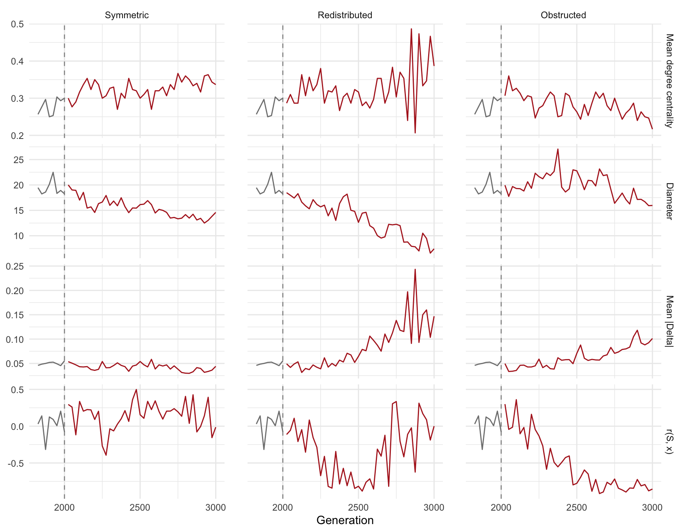
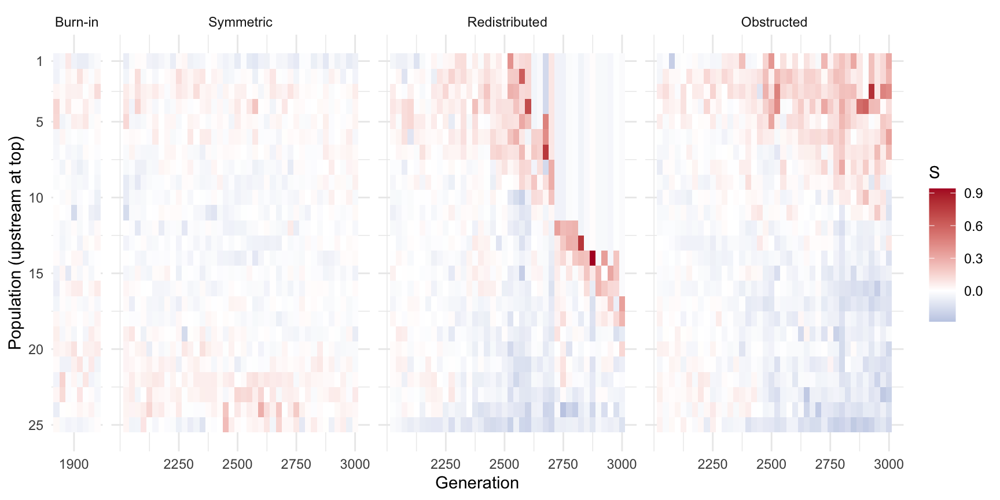

library( gstudio )
library( dplyr )
library( tidyr )
library( ggplot2 )10 Individual-Based Simulation
gstudio includes a forward-time, individual-based simulator: populations of diploid individuals, scored at any number of codominant loci, pass through migration, mating, mutation and drift one generation at a time. Because every census is an ordinary data.frame of locus columns, each one can be analysed with the rest of the package, from genetic_structure() to population_graph(). The first part of this chapter introduces the building blocks; the second uses them for a complete simulation study, the design behind the genetic gravity simulations (Chapter 9; Dyer 2026).
10.1 Building Populations from Frequencies
10.1.1 Allele Frequency Specification
The simulation tools start with specifying allele frequencies per population and locus. The make_populations() function requires a data.frame with Population, Locus, Allele, and Frequency columns:
freqs <- expand.grid( Allele = c( "01", "02" ),
Locus = c( "Loc1", "Loc2", "Loc3" ),
Population = c( "A", "B", "C" ),
stringsAsFactors = FALSE ) |>
mutate( Frequency = c( 0.2, 0.8, 0.3, 0.7, 0.4, 0.6, # A
0.7, 0.3, 0.5, 0.5, 0.6, 0.4, # B
0.4, 0.6, 0.3, 0.7, 0.2, 0.8 ), # C
Population = factor( Population, ordered = TRUE ) ) |>
select( Population, Locus, Allele, Frequency )10.1.2 Creating Populations
pop <- freqs |>
make_populations( N = 30 )
pop |>
head() Population ID Loc1 Loc2 Loc3
1 A 1 01:02 01:02 02:02
2 A 2 02:02 02:02 02:02
3 A 3 02:02 01:02 01:02
4 A 4 01:02 01:02 02:02
5 A 5 02:02 01:02 01:02
6 A 6 02:02 01:02 01:02pop |>
count( Population ) Population n
1 A 30
2 B 30
3 C 30You can specify an inbreeding level with F:
pop_inbred <- freqs |>
make_populations( N = 30, F = 0.3 )10.2 Migration Models
The migration_matrix() function creates a K x K migration matrix where rows sum to 1. Element [i,j] is the proportion of population i that originates from population j.
10.2.1 Island Model
Equal migration among all populations:
migration_matrix( 3, model = "island", m = 0.05 ) Pop1 Pop2 Pop3
Pop1 0.950 0.025 0.025
Pop2 0.025 0.950 0.025
Pop3 0.025 0.025 0.950A count names the populations Pop1, Pop2, …. For simulations, pass the population names instead (as below), so the matrix matches the Population column that simulate_pop() migrates between.
10.2.2 1D Stepping Stone
Migration only between adjacent populations:
c( "A", "B", "C", "D" ) |>
migration_matrix( model = "stepping_stone_1d", m = 0.1 ) A B C D
A 0.90 0.10 0.00 0.00
B 0.05 0.90 0.05 0.00
C 0.00 0.05 0.90 0.05
D 0.00 0.00 0.10 0.9010.2.3 Directional Stepping Stone
stepping_stone_1d_asym sets separate rates to the next population downstream (m_fwd, toward higher-indexed populations) and upstream (m_rev):
c( "A", "B", "C", "D" ) |>
migration_matrix( model = "stepping_stone_1d_asym",
m_fwd = 0.04,
m_rev = 0.01 ) A B C D
A 0.96 0.04 0.00 0.00
B 0.01 0.95 0.04 0.00
C 0.00 0.01 0.95 0.04
D 0.00 0.00 0.01 0.9910.2.4 2D Stepping Stone
Grid-based adjacency:
migration_matrix( 4, model = "stepping_stone_2d",
m = 0.1, nr = 2, nc = 2 ) Pop1 Pop2 Pop3 Pop4
Pop1 0.90 0.05 0.05 0.00
Pop2 0.05 0.90 0.00 0.05
Pop3 0.05 0.00 0.90 0.05
Pop4 0.00 0.05 0.05 0.9010.2.5 Distance-Based
Migration rate decays with distance:
coords <- matrix( c( 0, 0, 1, 0, 0.5, 1 ), ncol = 2, byrow = TRUE )
migration_matrix( 3, model = "distance", m = 0.1, coords = coords ) Pop1 Pop2 Pop3
Pop1 0.9000000 0.0527864 0.0472136
Pop2 0.0527864 0.9000000 0.0472136
Pop3 0.0500000 0.0500000 0.900000010.3 Migration Events
A migration_event pairs a migration matrix with a generation interval, allowing temporal regime changes:
# Low migration for generations 1-50
evt1 <- c( "A", "B", "C" ) |>
migration_matrix( model = "island", m = 0.05 ) |>
migration_event( start = 1, end = 50 )
# High migration from generation 51 onward
evt2 <- c( "A", "B", "C" ) |>
migration_matrix( model = "island", m = 0.20 ) |>
migration_event( start = 51 )10.4 Mutation Models
The mutation_model() function defines how alleles mutate during simulation:
# Infinite Alleles Model
mm_iam <- mutation_model( rate = 0.001, model = "iam" )
# K-Allele Model (10 possible states)
mm_kam <- mutation_model( rate = 0.001, model = "kam", k = 10 )
# Stepwise Mutation Model
mm_smm <- mutation_model( rate = 0.001, model = "smm" )10.5 Forward-Time Simulation
The simulate_pop() function runs a multi-generation forward-time simulation with non-overlapping generations and a constant size in each population. Each generation it migrates individuals, mates within populations (random mating, or mixed mating with selfing_rate), mutates the offspring, and saves a census if one is due.
10.5.1 Basic Simulation
result <- pop |>
simulate_pop( ngen = 20, verbose = FALSE )
result |>
head() Population ID Loc1 Loc2 Loc3
1 A 1 02:02 02:02 01:02
2 A 2 02:02 02:02 02:02
3 A 3 02:02 02:02 02:02
4 A 4 02:02 02:02 01:02
5 A 5 01:02 02:02 02:02
6 A 6 01:02 02:02 01:0210.5.2 With Migration
evt <- pop |>
pull( Population ) |>
unique() |>
migration_matrix( model = "island", m = 0.05 ) |>
migration_event( start = 1 )
result <- pop |>
simulate_pop( ngen = 20, migration = evt, verbose = FALSE )10.5.3 With Mutation
mm <- mutation_model( rate = 0.01, model = "iam" )
result <- pop |>
simulate_pop( ngen = 20, mutation = mm, verbose = FALSE )10.5.4 With Mixed Mating (Selfing)
result <- pop |>
simulate_pop( ngen = 20, selfing_rate = 0.3, verbose = FALSE )10.5.5 Census Snapshots
Save population snapshots at regular intervals:
result <- pop |>
simulate_pop( ngen = 100,
census_interval = 25,
census_dir = tempdir(),
verbose = FALSE )
# Snapshots saved as gen_0025.rds, gen_0050.rds, etc.10.5.6 Complete Worked Example
Simulate drift and migration in a 3-population system, then analyze the outcome:
# Create starting populations
pop <- freqs |>
make_populations( N = 50 )
# Set up island model migration among the simulated populations
evt <- pop |>
pull( Population ) |>
unique() |>
migration_matrix( model = "island", m = 0.02 ) |>
migration_event( start = 1 )
# Run simulation
set.seed( 42 )
final <- pop |>
simulate_pop( ngen = 50, migration = evt, verbose = FALSE )
# Analyze structure in the final generation
final |>
genetic_structure( stratum = "Population", mode = "Gst" ) Locus Gst Hs Ht
1 Loc1 0.06759165 0.4671380 0.5010016
2 Loc2 0.09801442 0.2709091 0.3003475
3 Loc3 0.02873663 0.1434343 0.1476781
4 Multilocus 0.07117360 0.2938272 0.3163424# Compare diversity before and after
list( Start = pop, Final = final ) |>
lapply( genetic_diversity, stratum = "Population", mode = "He" ) |>
bind_rows( .id = "Generation" ) |>
group_by( Generation, Stratum ) |>
summarize( mean_He = mean( He ), .groups = "drop" )# A tibble: 6 × 3
Generation Stratum mean_He
<chr> <chr> <dbl>
1 Final A 0.196
2 Final B 0.37
3 Final C 0.307
4 Start A 0.377
5 Start B 0.470
6 Start C 0.43510.6 A Simulation Study: Directional Gene Flow
The building blocks above are enough for a full simulation study. This section reproduces, for a single lineage, the design used to evaluate genetic gravity (Dyer 2026): what happens to a Population Graph, and to the direction read from it, when gene flow along a stepping stone stops being symmetric?
10.6.1 The Design
A metapopulation of \(K = 25\) populations of \(N = 100\) diploids is scored at \(L = 20\) independently segregating, biallelic loci. Generations do not overlap, mating is random within populations, and there is no mutation, so only migration and drift act. Every lineage first runs a 2,000-generation burn-in of symmetric migration along a one-dimensional stepping stone (\(m = 0.025\) in each direction). From the end of the burn-in, the same lineage is continued for 1,000 generations under each of three scenarios that differ only in the migration matrix:
| Scenario | \(m_{i \rightarrow i+1}\) | \(m_{i \leftarrow i+1}\) | Total | Held constant |
|---|---|---|---|---|
| Symmetric | 0.025 | 0.025 | 0.050 | the burn-in (the null) |
| Redistributed | 0.040 | 0.010 | 0.050 | total migration, split 4:1 |
| Obstructed | 0.025 | 0.010 | 0.035 | forward rate, reverse suppressed |
Gene flow in the two asymmetric scenarios runs toward higher-numbered populations, so Pop01 is the upstream end and the answer is known in advance.
K <- 25
N <- 100
demes <- sprintf( "Pop%02d", 1:K )
loci <- sprintf( "L%02d", 1:20 )
deme <- setNames( 1:K, demes )
scenarios <- tibble( Scenario = c( "Symmetric",
"Redistributed",
"Obstructed" ),
m_fwd = c( 0.025, 0.040, 0.025 ),
m_rev = c( 0.025, 0.010, 0.010 ) )10.6.2 A Common Ancestor
All populations start from the same allele frequencies, drawn for each locus from \(p \sim N( 0.5, 0.1 )\) and kept within \([0.01, 0.99]\), so that all differentiation arises during the simulation:
set.seed( 2026 )
p <- rnorm( length( loci ), mean = 0.5, sd = 0.1 ) |>
pmax( 0.01 ) |>
pmin( 0.99 ) |>
setNames( loci )
start <- expand_grid( Population = demes,
Locus = loci,
Allele = c( "01", "02" ) ) |>
mutate( Frequency = ifelse( Allele == "01",
p[Locus],
1 - p[Locus] ) ) |>
make_populations( N = N )
dim( start )[1] 2500 2210.6.3 From a Census to a Population Graph
Each census will be turned into a Population Graph, from which the summaries of the manuscript are computed: mean degree centrality \(\bar{C}_D\) and graph diameter \(D_G\) (surrogates for \(F_{ST}\) and Slatkin’s \(\hat{M}\); Dyer 2007), the mean absolute and signed edge asymmetry (\(\overline{|\Delta|}\) and \(\bar{\Delta}\), with edges oriented downstream, so \(\bar{\Delta} > 0\) when upstream populations read as sources), and the source-sink gradient \(r( S, x )\) along the stepping stone. The graph itself is kept too, for testing later.
summarize_census <- function( pop ) {
graph <- tryCatch( suppressWarnings( population_graph( pop ) ),
error = function( e ) NULL )
if( is.null( graph ) ) # e.g. too few polymorphic loci left
return( NULL )
asym <- graph |>
gravity_edges( x = deme )
S <- graph |>
source_sink_scores( x = deme )
n_e <- igraph::ecount( graph )
list( graph = graph,
stats = tibble( edges = n_e,
CD = 2 * n_e / ( K * ( K - 1 ) ),
diameter = igraph::diameter( graph ),
mean_abs_delta = mean( abs( asym$Delta ) ),
mean_delta = mean( asym$Delta ),
r_S = cor( S$S,
deme[S$Stratum],
method = "spearman" ),
degree_share = attr( S, "degree_share" ) ),
scores = select( S, Stratum, S ) )
}A run that takes a census every 25 generations is then a loop over simulate_pop(), each call continuing from the population the last one returned. (For long studies, simulate_pop( census_interval =, census_dir = ) writes every census to disk instead, to be analysed afterwards.)
run_censuses <- function( pop, migration, generations, every = 25 ) {
out <- list()
for( gen in generations ) {
pop <- pop |>
simulate_pop( ngen = every,
migration = migration,
verbose = FALSE )
out[[as.character( gen )]] <- summarize_census( pop )
}
attr( out, "final" ) <- pop
out
}10.6.4 Burn-in
The burn-in runs symmetric migration for 2,000 generations, with a census every 25 generations over the last 200 as a reference for the forward phase. With 2,500 individuals and 20 loci, a generation takes well under a tenth of a second. Because this and the next chunk take a few minutes, they are cached: Quarto reruns them only when their code, or the chunks they depend on, change.
symmetric <- demes |>
migration_matrix( model = "stepping_stone_1d_asym",
m_fwd = 0.025,
m_rev = 0.025 ) |>
migration_event()
set.seed( 2007 )
burn_censuses <- start |>
simulate_pop( ngen = 1800,
migration = symmetric,
verbose = FALSE ) |>
run_censuses( migration = symmetric,
generations = seq( 1825, 2000, by = 25 ) )
burn <- attr( burn_censuses, "final" )10.6.5 The Forward Phase
Each scenario continues the same burn-in population, so the three differ only in the migration matrix applied from generation 2,000:
run_scenario <- function( m_fwd, m_rev ) {
forward <- demes |>
migration_matrix( model = "stepping_stone_1d_asym",
m_fwd = m_fwd,
m_rev = m_rev ) |>
migration_event()
burn |>
run_censuses( migration = forward,
generations = seq( 2025, 3000, by = 25 ) )
}
set.seed( 1 )
censuses <- Map( run_scenario, scenarios$m_fwd, scenarios$m_rev ) |>
setNames( scenarios$Scenario )
censuses <- c( list( `Burn-in` = burn_censuses ), censuses )The summaries are collected into one tidy table, with a row per census:
tidy_censuses <- function( part ) {
censuses |>
lapply( function( run ) {
run |>
Filter( f = Negate( is.null ) ) |>
lapply( `[[`, part ) |>
bind_rows( .id = "generation" )
} ) |>
bind_rows( .id = "Scenario" ) |>
mutate( generation = as.integer( generation ) )
}
trends <- tidy_censuses( "stats" )
trends |>
filter( generation %in% c( 2000, 2500, 3000 ) ) |>
select( Scenario, generation, CD, diameter, mean_abs_delta, r_S )# A tibble: 7 × 6
Scenario generation CD diameter mean_abs_delta r_S
<chr> <int> <dbl> <dbl> <dbl> <dbl>
1 Burn-in 2000 0.3 18.3 0.0554 -0.0777
2 Symmetric 2500 0.3 16.1 0.0540 0.156
3 Symmetric 3000 0.337 14.6 0.0440 -0.0131
4 Redistributed 2500 0.317 12.6 0.0646 -0.816
5 Redistributed 3000 0.387 7.43 0.147 0.000769
6 Obstructed 2500 0.263 22.8 0.0706 -0.776
7 Obstructed 3000 0.217 16.0 0.101 -0.854 10.6.6 Trajectories
The burn-in reference is drawn into every panel so each scenario can be compared with symmetric migration at equilibrium:
burnin <- trends |>
filter( Scenario == "Burn-in" ) |>
select( -Scenario ) |>
crossing( Scenario = scenarios$Scenario )
long <- function( d ) {
d |>
pivot_longer( c( CD, diameter, mean_abs_delta, r_S ),
names_to = "statistic" ) |>
mutate( statistic = factor( statistic,
levels = c( "CD",
"diameter",
"mean_abs_delta",
"r_S" ),
labels = c( "Mean degree centrality",
"Diameter",
"Mean |Delta|",
"r(S, x)" ) ),
Scenario = factor( Scenario,
levels = scenarios$Scenario ) )
}
trends |>
filter( Scenario != "Burn-in" ) |>
long() |>
ggplot( aes( generation, value ) ) +
geom_vline( xintercept = 2000, linetype = "dashed", colour = "grey60" ) +
geom_line( data = long( burnin ), colour = "grey50" ) +
geom_line( colour = "firebrick" ) +
facet_grid( statistic ~ Scenario, scales = "free_y" ) +
scale_x_continuous( breaks = c( 2000, 2500, 3000 ) ) +
labs( x = "Generation", y = NULL ) +
theme_minimal() +
theme( panel.spacing.x = unit( 1.5, "lines" ) )
Under symmetric migration nothing changes systematically: mean degree and \(\overline{|\Delta|}\) stay near their burn-in levels, and \(r( S, x )\) wanders on either side of zero, at times as far as \(\pm 0.4\). A single census can therefore show a sizable gradient by chance, which is why the source-sink test draws its null from the graph itself. Once migration is redistributed toward one end, \(r( S, x )\) turns strongly negative within a few hundred generations (the sources are upstream), the diameter falls as the metapopulation homogenizes, and the asymmetry rises. After about generation 2,700 the lineage enters what the manuscript calls decay: as populations lose their polymorphism the graph becomes erratic, part of the rise in \(\overline{|\Delta|}\) is information loss rather than signal, and the gradient no longer holds. Obstructed migration, with half the net bias, moves the same way more slowly, and its gradient is still building at generation 3,000. These are single runs; the manuscript summarizes 50 lineages and, because each lineage moves through these phases at its own pace, compares them phase by phase.
10.6.7 The Source-Sink Score Through Time
The scores of every census, arranged by population and generation, show where the gradient comes from:
tidy_censuses( "scores" ) |>
mutate( deme = deme[Stratum],
Scenario = factor( Scenario,
levels = c( "Burn-in",
scenarios$Scenario ) ) ) |>
ggplot( aes( generation, deme, fill = S ) ) +
geom_tile() +
scale_fill_gradient2( low = "#2166ac",
mid = "white",
high = "#b2182b" ) +
scale_y_reverse( breaks = c( 1, 5, 10, 15, 20, 25 ) ) +
scale_x_continuous( breaks = c( 1900, seq( 2250, 3000, by = 250 ) ) ) +
facet_grid( . ~ Scenario, scales = "free_x", space = "free_x" ) +
labs( x = "Generation",
y = "Population (upstream at top)",
fill = "S" ) +
theme_minimal()
Under symmetric migration the scores show no pattern. Under Redistributed migration a band of sources forms upstream and the downstream end becomes a sink. After about generation 2,700 the band moves downstream, while the populations it leaves behind fade to neutral: the lineage collapses from its upstream end. Under Obstructed migration the band of sources holds its place upstream. No single statistic captures that change; the scores do.
10.6.8 Testing One Census
A researcher has one sample, not a time series. A single census of each scenario, here generation 2,500, can be tested exactly as field data would be (Chapter 9), with position along the stepping stone as the hypothesized axis:
set.seed( 1 )
censuses[scenarios$Scenario] |>
sapply( function( run ) {
graph <- run[["2500"]]$graph
ss <- source_sink_test( graph, x = deme, nperm = 999 )
iso <- ibgd( graph, x = deme, mode = "dcGD" )
c( r_S = unname( ss$statistic ),
p_S = ss$p.value,
dR2 = unname( iso$statistic ),
slope_ratio = unname( iso$estimate["slope ratio"] ) )
} ) |>
round( 3 ) Symmetric Redistributed Obstructed
r_S 0.156 -0.816 -0.776
p_S 0.512 0.011 0.009
dR2 -0.649 0.222 0.093
slope_ratio 0.877 -0.033 0.133At generation 2,500 both asymmetric scenarios are on their plateau. The source-sink test rejects with the sources upstream, and the directional isolation comparison prefers the directional description (\(\Delta R^2 > 0\)), with a forward-to-reverse slope ratio far below one: genetic distance accumulates more slowly downstream than upstream. Under symmetric migration neither test points anywhere. With 25 well-sampled populations the rule \(\Delta R^2 > 0\) is close to its nominal rate; for smaller designs, calibrate it with popgraph_null().
10.6.9 Scaling Up
The study in the manuscript repeats this for 50 lineages, with a census every five generations. Each lineage is independent, so lineages can run in parallel; give each its own seed so that runs are reproducible and do not share random numbers. On a laptop, one lineage of this design takes a few minutes.
run_lineage <- function( lineage ) {
set.seed( lineage )
dir <- file.path( "simulations", sprintf( "lineage%02d", lineage ) )
burn <- start |>
simulate_pop( ngen = 2000,
migration = symmetric,
verbose = FALSE )
for( i in seq_len( nrow( scenarios ) ) ) {
forward <- demes |>
migration_matrix( model = "stepping_stone_1d_asym",
m_fwd = scenarios$m_fwd[i],
m_rev = scenarios$m_rev[i] ) |>
migration_event()
burn |>
simulate_pop( ngen = 1000,
migration = forward,
census_interval = 5,
census_dir = file.path( dir, scenarios$Scenario[i] ),
verbose = FALSE )
}
}
parallel::mclapply( 1:50, run_lineage, mc.cores = 8 )Other designs need only different inputs: migration_matrix() for island, two-dimensional or distance-based migration; a list of migration_event()s for changes in the migration regime; mutation_model() for mutation; selfing_rate for mixed mating; and different N or allele frequencies for each population. To calibrate the tests for a particular field design rather than study the method, popgraph_null() (Chapter 9) runs the matching symmetric simulations for you.
10.7 References
Dyer RJ (2007) The evolution of genetic topologies. Theoretical Population Biology 71: 71–79.
Dyer RJ (2026) Genetic gravity: extracting directional gene flow from Population Graphs. bioRxiv.
10.8 Without Pipes
pop <- make_populations( freqs, N = 50 )
m <- migration_matrix( unique( pop$Population ),
model = "island",
m = 0.02 )
evt <- migration_event( m, start = 1 )
final <- simulate_pop( pop, ngen = 50, migration = evt, verbose = FALSE )
genetic_structure( final, stratum = "Population", mode = "Gst" )
mm <- migration_matrix( demes,
model = "stepping_stone_1d_asym",
m_fwd = 0.04,
m_rev = 0.01 )
burn <- simulate_pop( start,
ngen = 2000,
migration = migration_event( mm ),
verbose = FALSE )
graph <- population_graph( burn, stratum = "Population" )
source_sink_scores( graph, x = deme )
simulate_pop( burn,
ngen = 1000,
migration = migration_event( mm ),
census_interval = 25,
census_dir = "census",
verbose = FALSE )